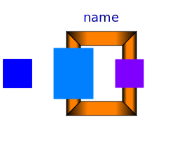
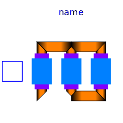

.
Modelica
.
Magnetic
.
FluxTubes
.
Examples
.
Hysteresis
.
Components
Information
Components to be used in examples
Contents
Name
Description

Transformer1PhaseWithHysteresis
Single Phase transformer with ferromagnetic core and hysteresis

Transformer3PhaseYyWithHysteresis
Three phase transfomer in Yy configuration
Generated at 2016-04-28T14:04:17Z by
OpenModelica
1.9.3+dev (r25613)